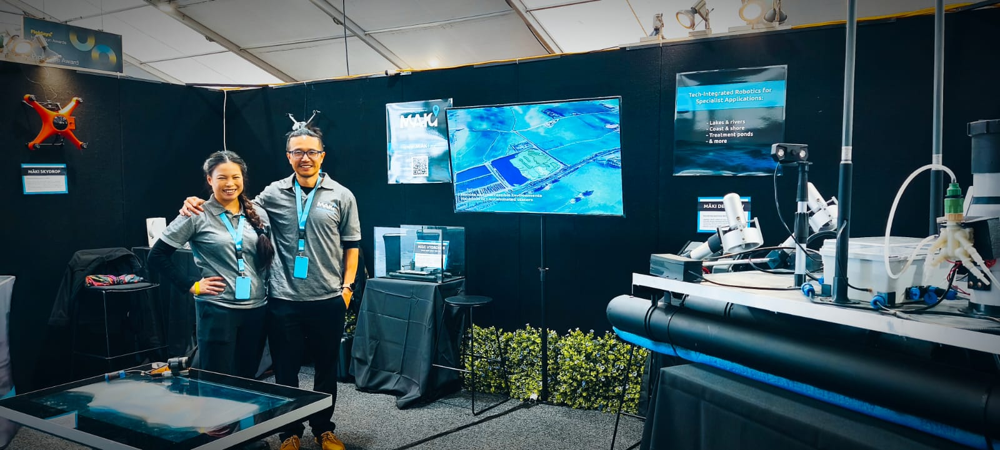

MĀKI was featured in a national media story following Fieldays 2025. The piece, published by Newsroom, was titled "Wool is making money again – and other rural success stories" and spotlighted innovative enterprises contributing to New Zealand's rural sector development.
It was a huge honour to be recognised among other forward-thinking businesses at Fieldays. MĀKI remains committed to delivering cutting-edge marine and environmental technologies that support smarter decision-making on land and water.

Our offerings include autonomous vessels, remotely operated vehicles, custom sensor systems, and mapping solutions designed for practical, scalable implementation.
A big thank you to the organisers of Fieldays and everyone who visited our stand. The experience was both humbling and energising — and we're just getting started. We're always keen to collaborate and explore how our tech can help you achieve your goals.